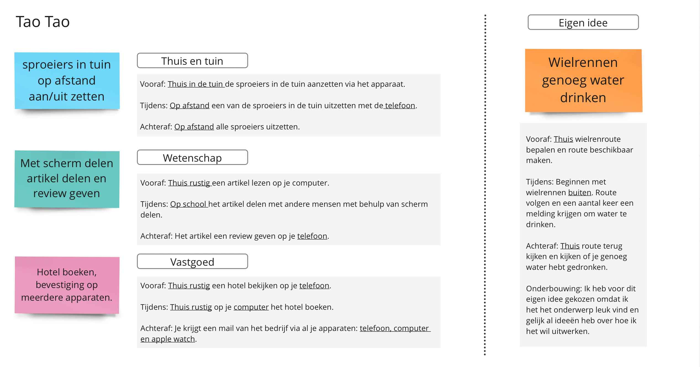
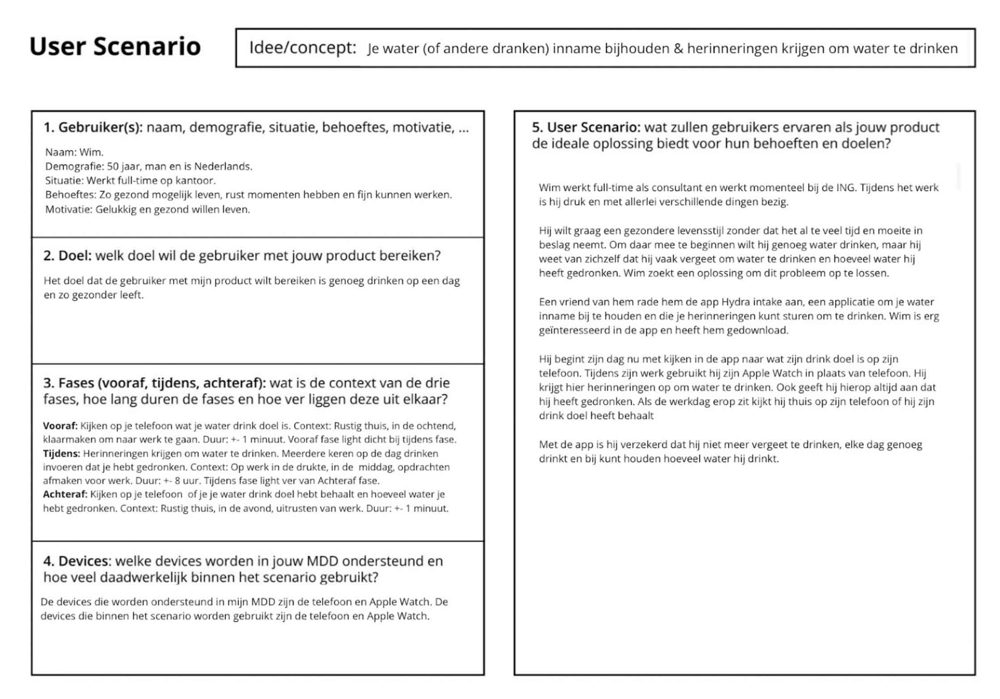
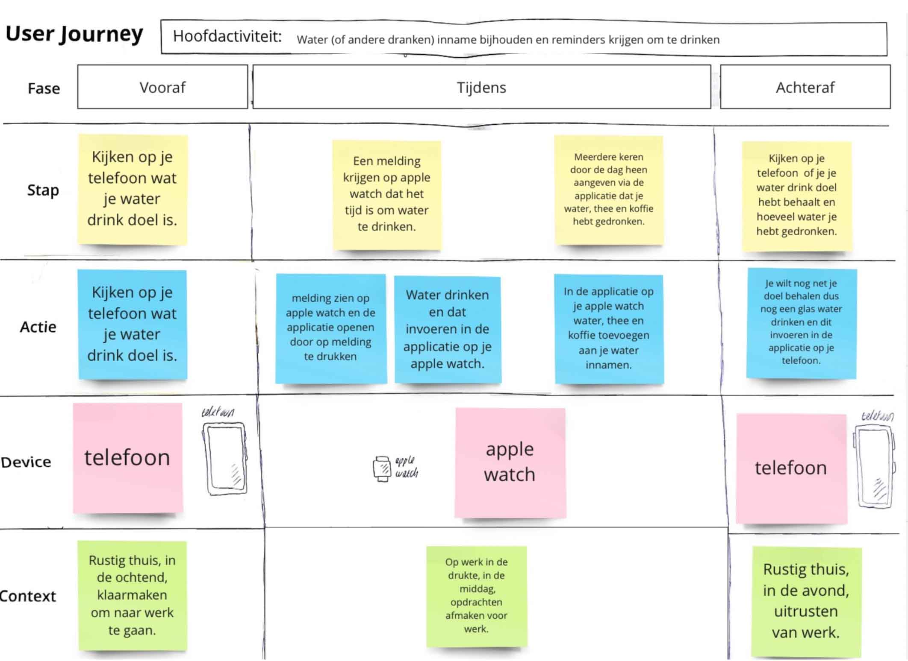
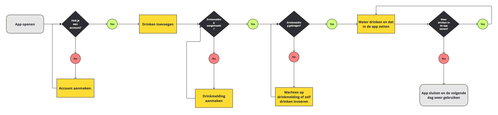
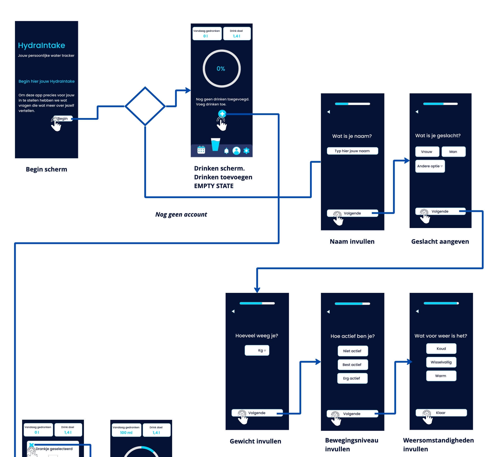
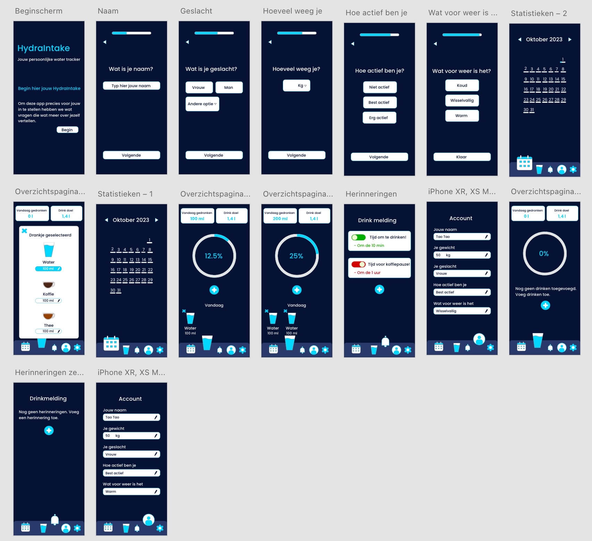
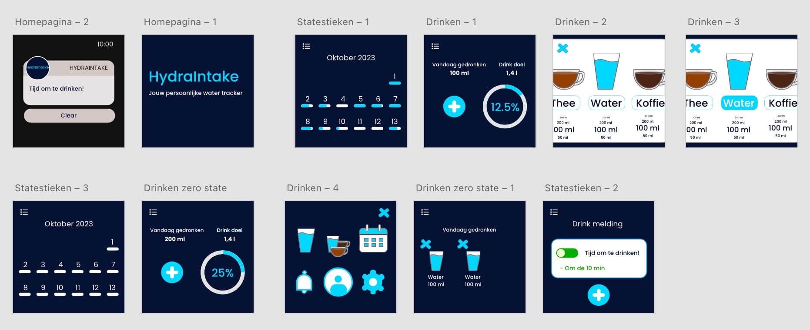

Responsive Multimedia Design
Duur van Project
2.5 maand
Werkvorm
Individueel werk
Tools
Adobe XD
Photoshop
Miro
Canva (voor mockups)
Challenge
Hoe kunnen we een aantrekkelijk en toegankelijk leersysteem creëren voor overwerkte, tijdarme en niet-technologische jeugdzorgwerkers, zodat ze zich vaardiger, gesteund en gemotiveerder voelen in hun veeleisende werk?
Oplossing
Een set fysieke kaarten en een bijbehorende app die samen een toegankelijk en flexibel leersysteem vormen voor jeugd- en gezinswerkers. De kaarten stimuleren korte, sociale leermomenten op de werkvloer, terwijl de app verdieping biedt wanneer daar tijd en ruimte voor is. Beide middelen sluiten aan op hun drukke, dynamische werkomgeving en voorkeur voor praktische, visuele en laagdrempelige leervormen.
Ideegeneratie
Ik begon met het bedenken van verschillende ideeën voor multi-device ervaringen, zoals het aan- en uitzetten van tuinsproeiers op afstand of het delen van wetenschappelijke artikelen. Mijn uiteindelijke keuze viel op het concept rondom hydratatie.
User Scenario en Journey
 Ik heb een user scenario en een user journey opgesteld om het proces vanuit het perspectief van de gebruiker in kaart te brengen. De user scenario omschrijft een specifieke gebruiker, Wim, en zijn behoeften en doelen met het product. De user journey bracht de stappen van de gebruiker in kaart, van het plannen van een activiteit tot het achteraf bekijken van de resultaten. Na feedback heb ik beide aangepast om de bredere doelgroep te weerspiegelen
Context Flavours
Ik analyseerde de context aan de hand van de D.E.T.A.I.L.S. (Device, Environment, Time, Activity, Individual, Location, Social) om te bepalen met welke factoren mijn ontwerp rekening moest houden. De apparaten (telefoon en Apple Watch) werden gekozen vanwege hun draagbaarheid en interactiemogelijkheden, zoals aanraking en spraak.
De Drie C's (Consistent, Continuous, Complementary)
Ik zorgde ervoor dat mijn ontwerp voldeed aan deze principes. Het ontwerp heeft een consistent uiterlijk op alle apparaten, is continuous omdat gebruikers van het ene apparaat naar het andere kunnen overschakelen zonder voortgang te verliezen, en is complementary omdat de apparaten elkaar versterken. Een voorbeeld hiervan is het ontvangen van een melding op de Apple Watch als de telefoon is weggelegd
Wireflow en Screen Design
   Ik heb flowcharts en schermontwerpen gemaakt om de structuur en het uiterlijk van de app te visualiseren. De uiteindelijke ontwerpen bevatten minder informatie op de Apple Watch dan op de telefoon, wat passend is voor het kleinere scherm
Resultaat
HydraIntake, een persoonlijke water tracker. De app stuurt herinneringen via trillingen en meldingen op de Apple Watch en de telefoon om gebruikers te helpen gehydrateerd te blijven. Gebruikers kunnen hun drinkdoel en de hoeveelheid water die ze hebben gedronken direct zien op de app.